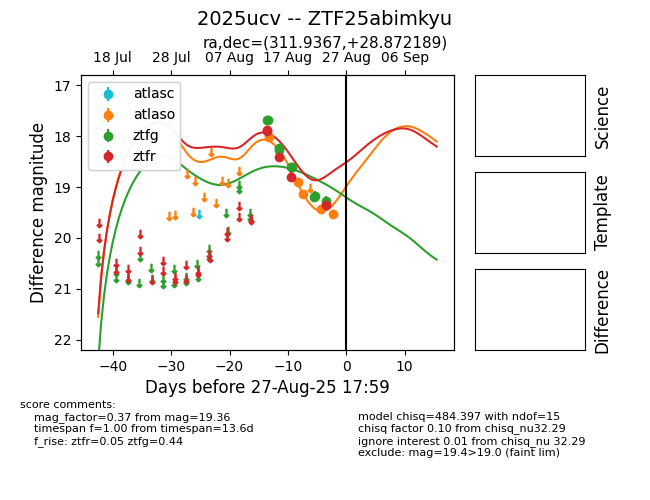

Target 2025ucv at 2025-08-26 10:22, see:
FINK: fink-portal.org/ZTF25abimkyu
Lasair: lasair-ztf.lsst.ac.uk/objects/ZTF25abimkyu
ALeRCE: alerce.online/object/ZTF25abimkyu
TNS: wis-tns.org/object/2025ucv
YSE: ziggy.ucolick.org/yse/transient_detail/2025ucv
alt names
ZTF25abimkyu (ztf,fink)
2025ucv (tns,yse)
coordinates:
equatorial (ra, dec) = (311.9367,+28.87219)
galactic (l, b) = (72.1142,-9.12477)
photometry
last atlaso=19.53, ztfg=19.33, ztfr=19.36
5 atlaso, 10 ztfg, 5 ztfr detections
